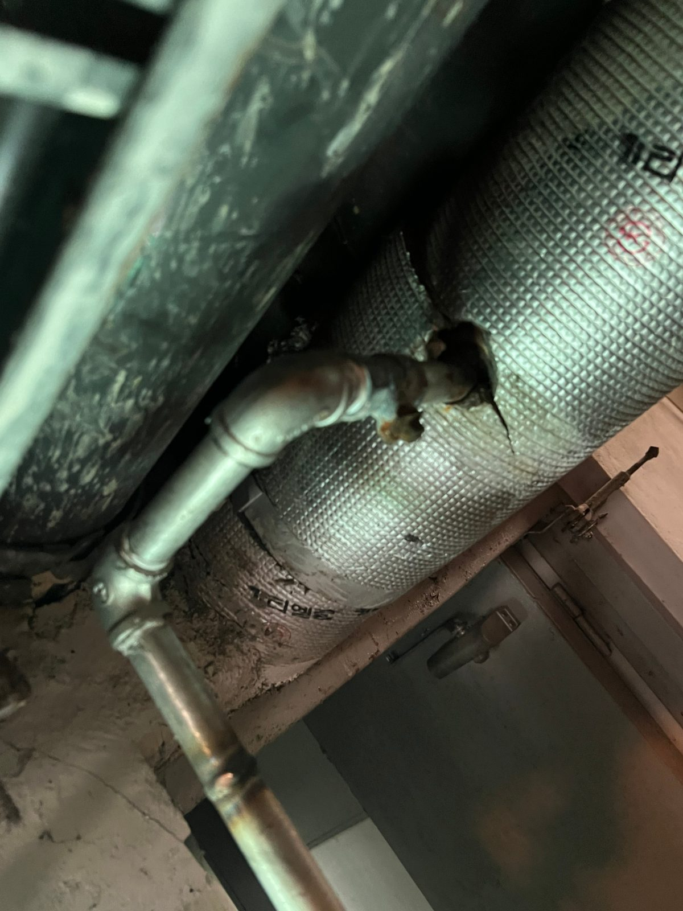

대전 금성백조아파트 지하 공용배관 교체 — 세대 계량기 밸브까지 함께 정리했습니다

아파트 지하실을 지나는 노후 공용배관 구간을 새 배관으로 교체하고, 같은 라인에서 잠기지 않던 세대 계량기 밸브를 함께 교체한 현장 기록입니다.
어떤 공사였나요
아파트 지하실을 지나는 공용배관의 노후 구간을 교체한 현장입니다. 작업 과정에서 같은 라인 세대의 계량기 밸브가 노후로 제대로 잠기지 않는 것을 확인해, 배관 교체와 함께 밸브도 새것으로 바꿨습니다.
지하 공용배관 교체
부식이 진행된 구간을 잘라내고 새 배관으로 연결했습니다. 지하 배관은 한 세대의 문제가 아니라 라인 전체에 영향을 주기 때문에, 교체 범위를 정할 때 눈에 보이는 누수 지점만이 아니라 앞뒤 배관 상태까지 확인하고 구간을 잡았습니다.

계량기 밸브를 함께 교체한 이유
계량기 밸브는 세대에서 누수가 났을 때 물을 잠그는 마지막 수단입니다. 이 밸브가 삭아서 안 잠기면 응급 상황에서 피해가 몇 배로 커집니다. 배관을 손보는 김에 잠기지 않는 밸브를 같이 교체하면 따로 부를 때보다 비용과 단수 시간을 아낄 수 있습니다.

단수와 일정
공용배관 공사는 단수가 불가피해서, 자재를 미리 재단해 두고 실제 물을 잠그는 시간을 최대한 짧게 잡는 순서로 진행했습니다. 관리사무소와 단수 안내·작업 시간을 협의한 뒤 작업했습니다.
마무리 확인
교체 후 통수해서 새는 곳이 없는지, 교체한 밸브가 실제로 잠기고 열리는지 확인하고 마무리했습니다. 우리 집 계량기 밸브가 잠기는지 일 년에 한 번쯤 돌려서 확인해 보시는 것을 권합니다.